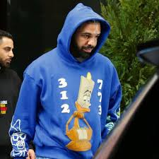
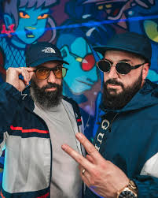
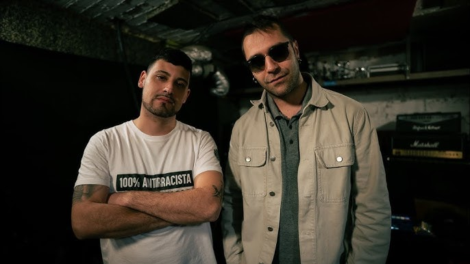
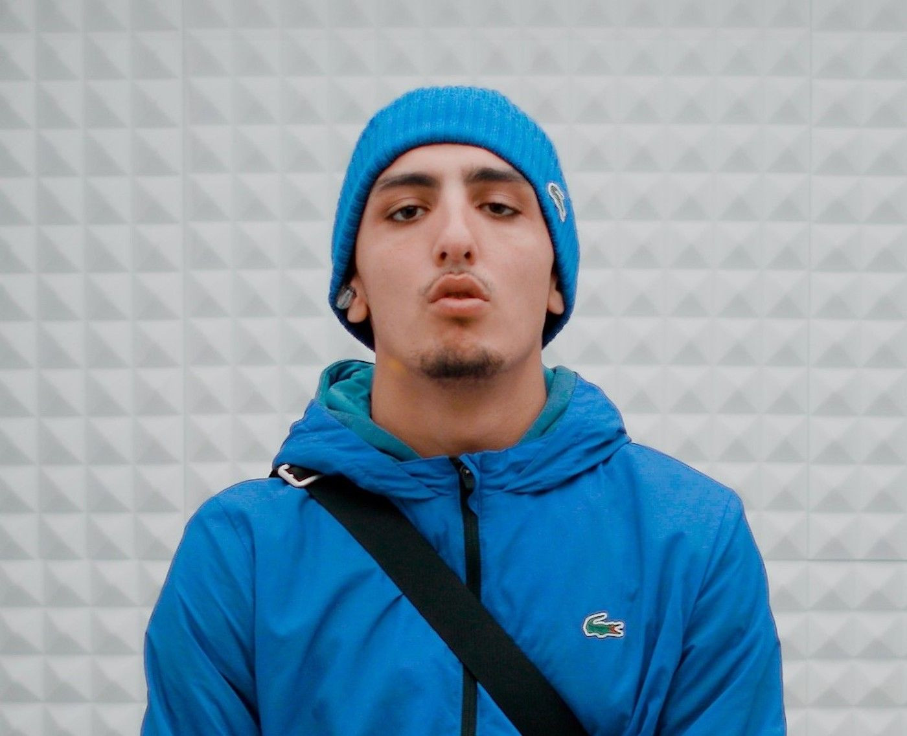
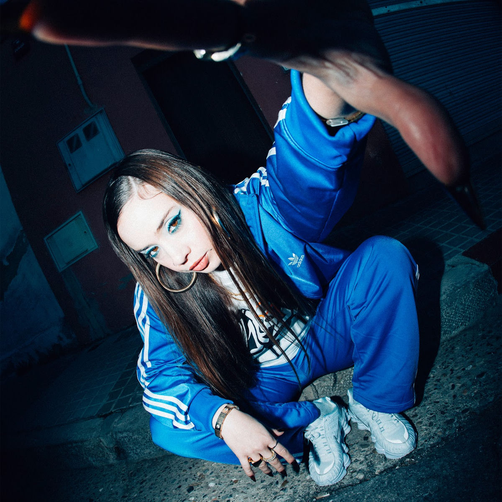
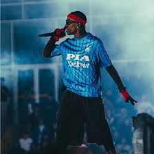
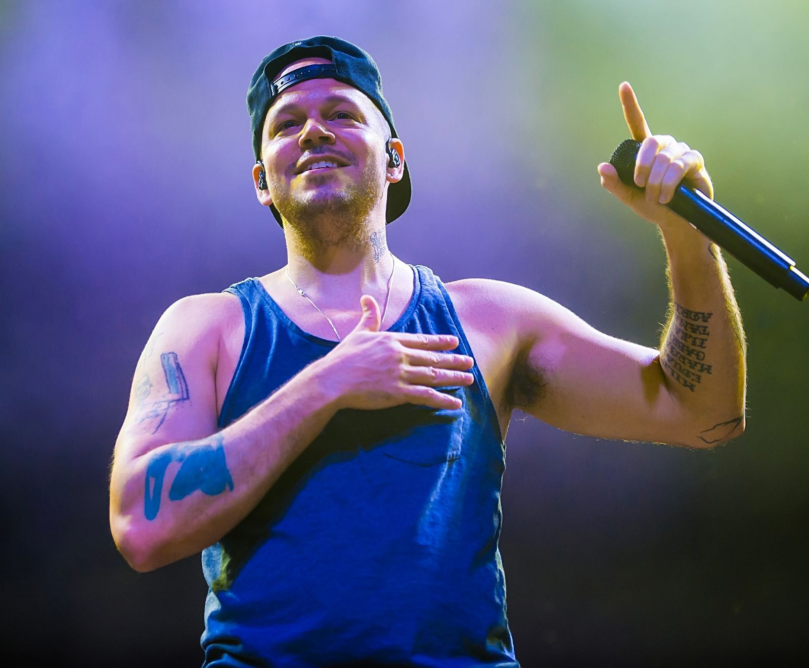
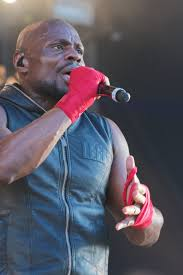

Nach
Rapero español nacido en Albacete, referente del hip-hop consciente por sus letras profundas y poéticas. Comenzó su carrera en el rap en 1994 con sus primeras maquetas.
Descubre a mis favoritos artistas del rap español e internacional

Rapero español nacido en Albacete, referente del hip-hop consciente por sus letras profundas y poéticas. Comenzó su carrera en el rap en 1994 con sus primeras maquetas.
 =======
=======

>>>>>>> 9cba7d5f4fbe0964c931dd229d07a2ed73a546a2Dúo de rap español conocido por su contenido social y político directo. Iniciaron su trayectoria a finales de los años 90 dentro de la escena underground.

Rapero español con un estilo introspectivo y poético, centrado en la crítica social y la narrativa urbana. Comenzó a ganar notoriedad en la década de 2010 en la escena independiente.

Artista urbano de Barcelona conocido por su estilo crudo y realista basado en vivencias personales. Empezó a publicar música en 2018, alcanzando gran popularidad rápidamente.

Rapera catalana que destaca por su voz potente y compromiso social en sus letras. Inició su carrera musical a mediados de la década de 2010 dentro del circuito underground.
Rapero, cantante y actor canadiense que fusiona rap y R&B, dominando la escena global. Comenzó su carrera musical en 2006 con su primer mixtape.

Rapero y productor estadounidense conocido por su sonido experimental y atmosférico. Inició su carrera profesional en la industria musical a principios de la década de 2010.

Rapero puertorriqueño reconocido por su lírica crítica y compromiso social. Comenzó en el rap como miembro de Calle 13 en 2004.

Rapero y productor estadounidense destacado por sus letras introspectivas. Empezó a rapear en su adolescencia y lanzó su primer mixtape en 2007.

Rapero francés comprometido con la justicia social y la denuncia de desigualdades. Comenzó su carrera musical en los años 90 como parte del grupo Ideal J.